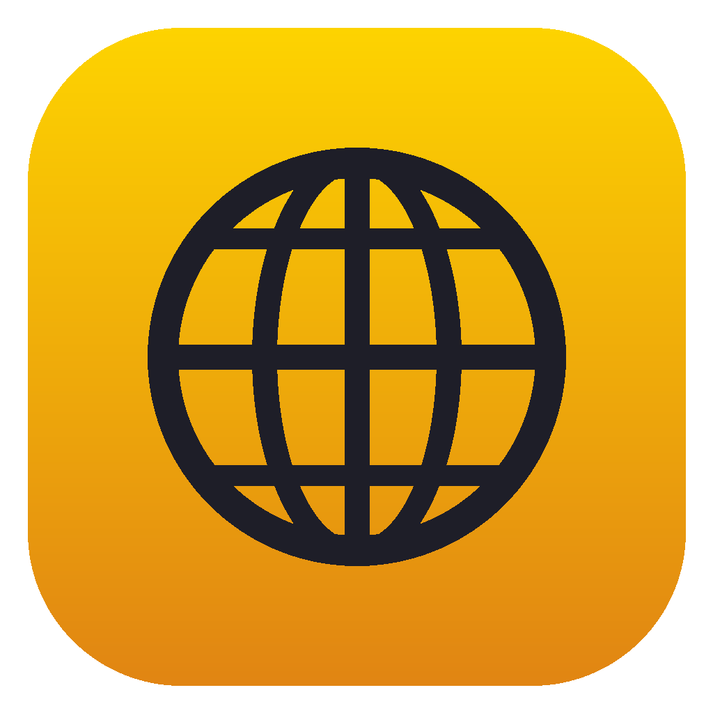
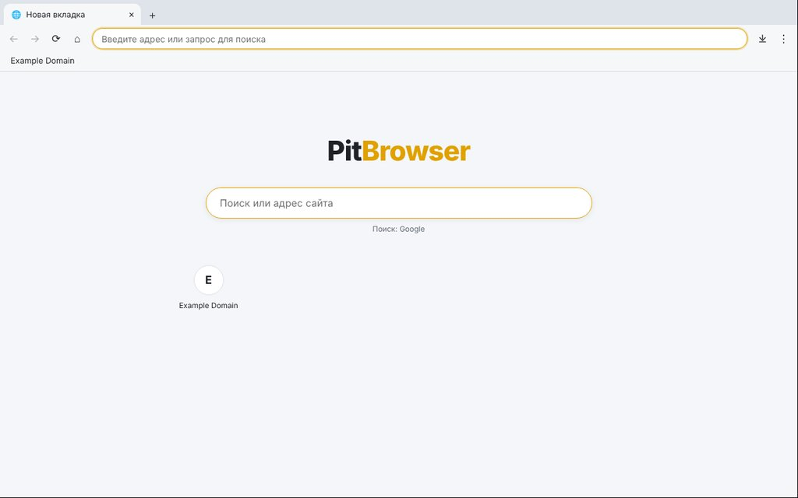

PitBrowser
Свой браузер для компьютера (Windows, macOS, Linux) и телефона (Android)

Скачать
Установщики собирает GitHub Actions (workflow «Build PitBrowser») и выкладывает в Releases.
Приложения и игры
На телефоне PitBrowser — это ещё и главный экран с вашими приложениями. Игра или приложение
(обычный сайт в архиве .pitapp) ставится из магазина или файла, запускается
на весь экран, работает без интернета и через библиотеку PitSDK получает:
📡 Датчики
- акселерометр, гироскоп, гравитация
- компас и ориентация
- освещённость, приближение, давление
🎮 Для игр
- вибрация, звук, мультитач, геймпады
- наушники, кнопки гарнитуры и громкости
- таблицы рекордов
- экран не гаснет, поворот экрана
📷 Медиа
- камера и микрофон
- геолокация
- только с разрешения пользователя
🔵 Bluetooth
- игры между телефонами без интернета
- BLE: браслеты, датчики, ESP32
- Serial: HC-05, HC-06
- только выбранные пользователем устройства
Встроенная демо-игра «Монетки»: катайте шарик наклоном телефона. Документация для разработчиков — sdk/README.md.
Возможности
💻 Компьютер
- Движок Chromium (Electron)
- Вкладки: перетаскивание, восстановление закрытой
- Панель закладок, подсказки в адресной строке
- История с поиском, менеджер загрузок
- Поиск по странице, масштаб, печать, сохранение
- Приватные окна (без истории и cookie)
- Светлая/тёмная тема, выбор поисковика
📱 Телефон
- Системный WebView (Chromium), APK ≈ 110 КБ
- Вкладки, сохраняются после перезапуска
- Закладки, история, загрузки в «Загрузки»
- Поиск по странице, «Поделиться»
- Версия для ПК, полноэкранное видео
- Камера, микрофон, геолокация — по запросу
- Можно сделать браузером по умолчанию
Горячие клавиши (компьютер)
Ctrl+T / Ctrl+W | новая / закрыть вкладку |
Ctrl+Shift+T | вернуть закрытую вкладку |
Ctrl+Shift+N | приватное окно |
Ctrl+L | адресная строка |
Ctrl+D / Ctrl+H / Ctrl+J | закладка / история / загрузки |
Ctrl+F | найти на странице |
Ctrl+Tab, Ctrl+1…9 | переключение вкладок |
Запуск из исходников
cd projects/browser/desktop npm install npm start # запустить npm run dist # собрать установщик для своей ОС cd projects/browser/android ./gradlew assembleRelease # APK в app/build/outputs/apk/release/
Подробности — в README.md.